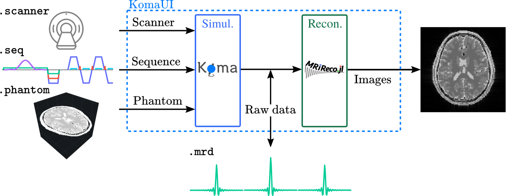
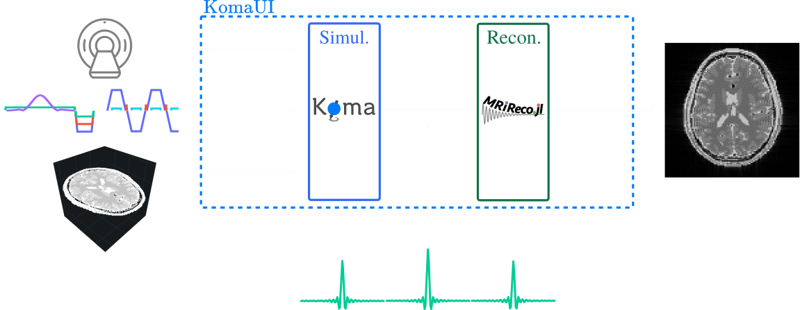

Introduction
KomaMRI is a Julia package meant to simulate general Magnetic Resonance Imaging (MRI) scenarios. Its name comes from the Japanese word for spinning-top こま (ko-ma) as they precess due to gravity like spins in a magnetic field.
KomaMRI generates raw data by solving the Bloch equations using the specified scanner, phantom and sequence. It also provides a Graphical User Interface (GUI) that encapsulates the whole imaging pipeline (simulation and reconstruction).


We organized the documentation following the philosophy presented by David Laing.
How to Cite Koma
If you use Koma, please cite our paper:
Plain Text:
Castillo-Passi, C, Coronado, R, Varela-Mattatall, G, Alberola-López, C, Botnar, R, Irarrazaval, P. KomaMRI.jl: An open-source framework for general MRI simulations with GPU acceleration. Magn Reson Med. 2023; 1- 14. doi: 10.1002/mrm.29635BibTex:
@article{https://doi.org/10.1002/mrm.29635,
author = {Castillo-Passi, Carlos and Coronado, Ronal and Varela-Mattatall, Gabriel and Alberola-López, Carlos and Botnar, René and Irarrazaval, Pablo},
title = {KomaMRI.jl: An open-source framework for general MRI simulations with GPU acceleration},
journal = {Magnetic Resonance in Medicine},
keywords = {Bloch equations, GPU, GUI, Julia, open source, simulation},
doi = {https://doi.org/10.1002/mrm.29635},
url = {https://onlinelibrary.wiley.com/doi/abs/10.1002/mrm.29635},
eprint = {https://onlinelibrary.wiley.com/doi/pdf/10.1002/mrm.29635},
}Features
- Fast simulations by using CPU and GPU parallelization 🏃💨.
- Open Source, so anyone can include additional features 🆙.
- Compatibility with community-standards 🤝 like Pulseq
.seqand ISMRMRD.mrd. - Compatibility with Pluto and Jupyter notebooks 🎈
- Interactive visualizations using PlotlyJS.jl 📲
- Cross-platform 🌐 thanks to the use of the Julia programming language.
- Friendly user interface for people with no programming skills 😌.
- Flexible API for advanced users 👨💻.
Potential Use Cases
- The generation of synthetic data to train Machine Learning models.
- To test novel pulse sequences before implementing them directly in a real scanner (with a Pulseq sequence).
- Teaching exercises for MRI acquisition or reconstruction.